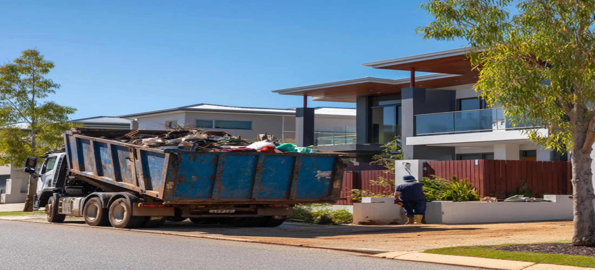
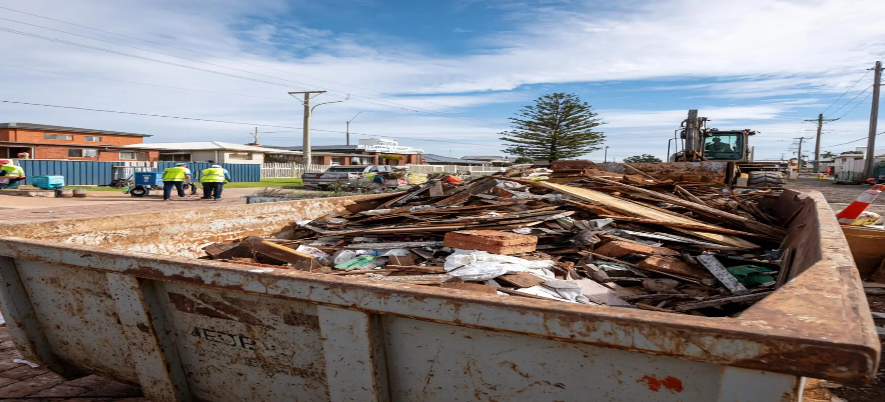

Skip Bins Bunbury Services
Household Skip Bins
Many homeowners use skip bins Bunbury services when cleaning out garages, decluttering spare rooms, preparing homes for sale, or removing unwanted furniture and household items. Household skip bins provide a convenient alternative to multiple trips to local disposal facilities and help keep residential cleanup projects organised. Whether you are moving house or completing a seasonal cleanup, Bunbury skip bins offer a practical waste removal solution.
Green Waste Skip Bins
Green waste skip bins Bunbury customers use are ideal for landscaping projects, garden renovations, storm cleanup work, and routine property maintenance. Branches, shrubs, grass clippings, leaves, and other organic materials can quickly accumulate on a property. Separating green waste from mixed rubbish often helps simplify disposal and may provide a more cost-effective waste removal option.
Renovation & Construction Skip Bins
Renovation and construction projects often generate timber, plasterboard, bricks, tiles, concrete, packaging materials, and demolition debris. Skip bins hire Bunbury services help builders, contractors, and property owners manage waste more efficiently while maintaining a safer and cleaner worksite. We also provide suitable skip bins Bunbury for sand and other heavy materials commonly generated during construction projects.
Commercial & Industrial Skip Bins
Businesses frequently require skip bins Bunbury WA services for office cleanouts, warehouse maintenance, retail refurbishments, industrial operations, and ongoing waste management requirements. Commercial skip bins help businesses remove large volumes of waste efficiently without disrupting daily operations.
Property & Rental Cleanup Skip Bins
Landlords, property managers, and real estate professionals often use Bunbury skip bins when preparing rental properties for new tenants or completing end-of-lease cleanups. These projects can involve furniture disposal, damaged household items, green waste, and mixed rubbish. A properly sized skip bin helps simplify the process while reducing cleanup time.
Skip Bin Sizes Available In Bunbury
Different projects require different skip bin capacities. Mini skip bins Bunbury customers choose are often suitable for household cleanups, garden waste removal, and smaller renovation jobs. Medium-sized bins are commonly used for property maintenance and larger residential projects, while bigger skip bins are frequently selected for commercial waste removal, construction debris, and bulk rubbish disposal. Choosing the right size helps improve efficiency and can significantly affect overall skip bins Bunbury price requirements.
Common Reasons To Hire A Skip Bin In Bunbury
Customers hire skip bins for a wide range of projects including home renovations, landscaping work, moving house, rental property cleanouts, deceased estate clearances, office upgrades, and construction projects. Many homeowners also use skip bins after storms or major yard maintenance projects when large volumes of green waste and unwanted materials need to be removed quickly from the property.
What Affects Skip Bins Bunbury Prices
Several factors influence Bunbury skip bins prices, including bin size, waste category, project duration, disposal requirements, and delivery location. Green waste bins are often more affordable than mixed waste or heavy construction bins due to lower processing costs. Customers searching for cheapest skip bin Bunbury solutions can often reduce overall costs by selecting the appropriate bin size and ensuring waste is separated correctly. Understanding these factors helps customers compare skip bins Bunbury price options more effectively and choose a solution that matches both their project requirements and budget.
Why Customers Choose Our Service
Choosing the right skip bin provider can make a significant difference to project efficiency and overall waste management. Customers choose our skip bins Bunbury Western Australia service because we help identify the most suitable bin size, explain waste disposal requirements, and provide practical solutions for residential, commercial, and construction projects. Whether you require mini skip bins Bunbury for a small cleanup or larger bins for ongoing site work, our goal is to make waste removal simple, convenient, and cost-effective.

Frequently Asked Questions
How much does skip bins Bunbury price typically cost?
Skip bins Bunbury price requirements vary depending on the bin size, waste type, project duration, and disposal costs. Smaller bins used for household rubbish and green waste are often more affordable than larger bins used for construction and demolition materials. We assess your project requirements and recommend the most suitable option before providing a competitive quote.
Are cheap skip bins Bunbury available for residential projects?
Yes. Many residential customers searching for cheap skip bins Bunbury solutions only require smaller bin sizes for household cleanups, moving house, garden maintenance, or furniture removal. Choosing the correct bin size often helps reduce overall project costs while still providing enough capacity for the waste being removed.
What is the cheapest skip bin Bunbury option?
The cheapest skip bin Bunbury options are generally smaller bins used for light household rubbish and green waste projects. Customers looking for cheapest skip bins Bunbury services can often lower costs by selecting an appropriately sized bin and separating green waste from mixed rubbish wherever possible.
Do you provide mini skip bins Bunbury customers can use for small projects?
Absolutely. Mini skip bins Bunbury customers use are popular for garage cleanouts, garden maintenance, small renovations, rental property cleanups, and decluttering projects. These bins provide a practical solution when standard council bins do not offer enough capacity for the amount of waste being generated.
Do you service the wider skip bins Bunbury area?
Yes. Our skip bins Bunbury area coverage includes residential, commercial, and industrial locations throughout Bunbury and surrounding communities. Whether you require waste removal for a home renovation, construction project, landscaping job, or business cleanup, we can help identify a suitable skip bin solution for your location.
Can skip bins Bunbury for sand and heavy materials be arranged?
Yes. Skip bins Bunbury for sand, soil, bricks, concrete, and other heavy materials can be arranged depending on project requirements. Because heavy waste affects weight limits and disposal processes, we recommend discussing the material type before booking so the correct bin can be supplied.
How do Bunbury council skip bins compare to private skip bin hire?
Bunbury council skip bins may be available through specific waste management programs, while private skip bin hire generally offers greater flexibility in terms of bin sizes, scheduling, waste categories, and project requirements. Many customers choose private skip bins when they require faster delivery or larger waste capacity.
How does your service compare with Cleanaway skip bins Bunbury options?
Customers comparing Cleanaway skip bins Bunbury services often focus on factors such as availability, bin sizes, project suitability, and overall pricing. We work with residential, commercial, and construction customers to recommend the most appropriate skip bin solution based on the specific requirements of each project.
Do you provide green waste skip bins Bunbury customers can use for landscaping projects?
Yes. Green waste skip bins Bunbury customers use are suitable for branches, shrubs, leaves, grass clippings, and other organic materials generated during landscaping work, seasonal property maintenance, and storm cleanup projects. Green waste bins can help simplify disposal while keeping outdoor projects organised.
Do you provide skip bins Bunbury WA and surrounding locations?
Yes. We provide skip bins Bunbury WA services across residential, commercial, and industrial locations throughout the region. Whether you require skip bins hire Bunbury for a household cleanup, renovation project, commercial property, or construction site, we can help arrange a suitable waste removal solution.